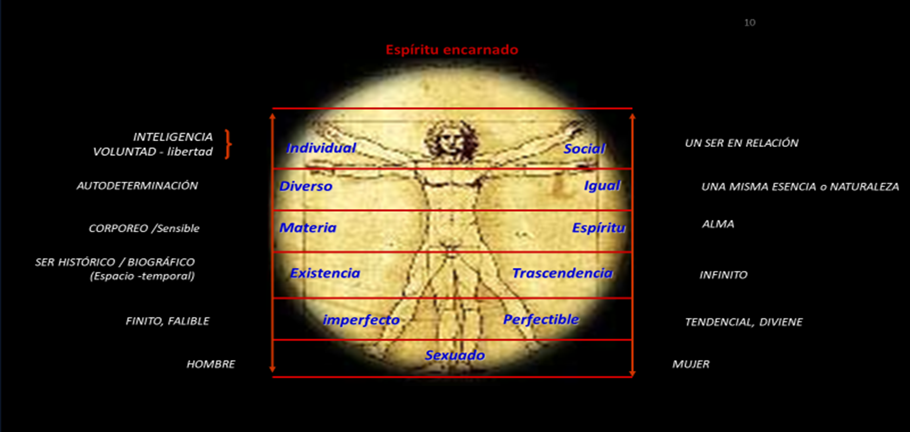
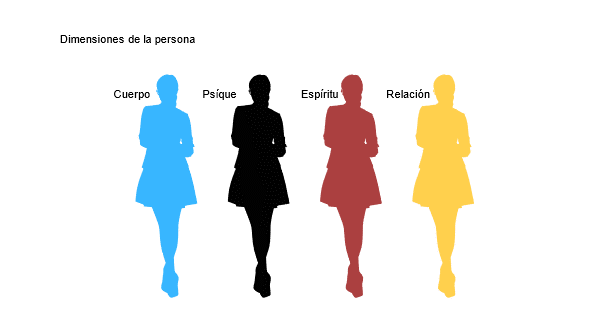
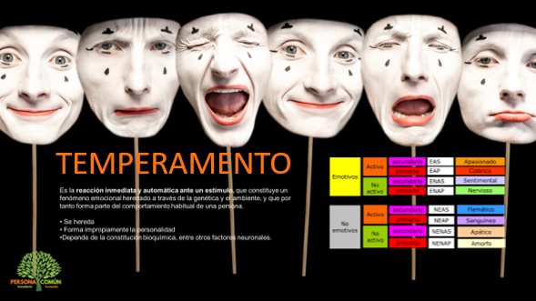

Objetivo: Este curso, diseñado para personal docente y administrativo del sistema SABES, pretende ofrecer el ambiente propicio para para que los participantes adquieran los conocimientos y habilidades que los faculten para tener un claro concepto de sí mismos, así como herramientas que le permitan desarrollar un propósito en la vida y desde él afrontar las dificultades que se presenten en ella. Iniciamos ubicando el concepto de persona.
En todo ser humano hay cualidades que nos llevan a llamarlo “persona”, pero el ser llamado así, el ser llamado persona, no es ninguno de esos rasgos, sino el portador humano o individuo que los tiene (o que carece de ellos por desgracia). El ser de la persona es la vida del hombre. Si distinguiéramos ente el ser y el tener, la persona se sitúa en el ámbito del ser, es el ser de cualquier ser humano. El ser es un “más allá” de todas las cualidades que pueda este tener. La persona es un ser humano concreto, es decir, cada uno. NO es, pues, algo universal, una propiedad común, como ser bípedo o mamífero. La persona es siempre un quien, un ser irreductible, de tal forma que si el nombre fuera un espejo que reflejara fielmente la persona que lo lleva, si fuera su nombre propio y designara tan sólo lo peculiar y exclusivo, cada ser humano tendría su nombre, y, cuando alguien lo llamara, nadie podría responder salvo el ser humano convocado. Si el llamado “nombre propio” fuera propio de verdad, sería un nombre personal válido para uno solo, y existirían tantos nombres como personas humanas” . Realmente es incorrecto decir “persona” sin más, como si persona fuera lo mismo que los objetos vendidos en waldos, todos al mismo precio. Lo exacto sería decir “la persona tal o cual”, o “la persona fulana”, donde “tal” y “cual” indicarían lo radical de la persona, de cada uno exclusiva. Hoy estas tu convocado o convocada para tomar este curso que pretende ser personalizado para ti o que al menos así lo sintieras porque el curso quiere ser una invitación a que te reconozcas y te valores como tal, como un ser único, irrepetible y que te reconozcas como poseedor o poseedora de muchas cualidades, capacidades, dones, únicos, que nadie los puede vivir y ser como tú.
Los seres humanos, tu o yo, tenemos unas facultades superiores que nos muestran la pertenencia al grupo de los seres personales. Y ciertamente estas facultades son muy importantes, aunque no son sus únicas cualidades esenciales. Recordaremos algunas de las más importantes, aquellas que nos acumulan y nos hacen iguales pero diferentes, y tendremos que hablar de las dimensiones de la persona: su cuerpo, su espíritu, su psíque y su apertura a los demás en las relaciones. Explicaremos brevemente cada una de estas facultades y cualidades de todo ser personal y después nos detendremos en la forma como este ser personal vive su existencia en unidad.
Nos detendremos especialmente en la forma como la persona se interpreta a sí misma desde la riqueza de su mundo afectivo, tratando de encontrar su “inteligibilidad” y la necesidad de conocer el propio marco afectivo de referencia reactiva ante las circunstancias que nos rodean.
Así hablaremos también de nuestro temperamento como el regalo especial a través del cual vemos e interpretamos el mundo exterior e interior en clave afectiva. Trataremos de encontrar un nombre a nuestro temperamento y conocer sus fortalezas y debilidades.
Conociendo la forma de reaccionar y la importancia de mantener una inteligencia emocional todo el tiempo, hablaremos también de la emoción que predomina en nosotros, así como las pasiones que podrían regir el interior de la persona, entendiendo que en estas emociones se construye también la interpretación personal en clave afectiva y por ello haremos un test de autoestima para situarnos en el diálogo de cómo mejorarla. Comprendido este paso de la inteligencia emocional y la proactividad por controlar el propio mundo afectiva, nos descubriremos entrando al mundo de la responsabilidad afectiva y para ello la necesidad del autodominio para poder llegar a tener autonomía y libertad. Condición sin la cual no podríamos relacionarnos en sociedad, con los otros iguales que nos invitan constantemente a la interacción y a la mutua interdependencia. Pero también trataremos de los límites y el ámbito de la propia libertad. Reconociendo que tenemos control sobre nosotros, pero no podemos ser responsables por los demás. Así que las habilidades sociales serán nuestro gran auxilio para el mundo de las relaciones sociales y construiremos vínculos sanos y duraderos, incluso para cuando llega a la vida de toda persona el dolor, la muerte, las pérdidas, el sufrimiento. Necesitamos de la resiliencia para volver a levantarnos y seguir adelante. Esta habilidad la podemos siempre adquirir, pero es importante concebir el crecimiento personal desde la perspectiva del reto, de los obstáculos. El éxito dependerá de cómo plantemos los problemas, si los enfrentamos y superamos o nos dejamos vencer por ellos. Haremos un test de resiliencia para conocernos mejor.